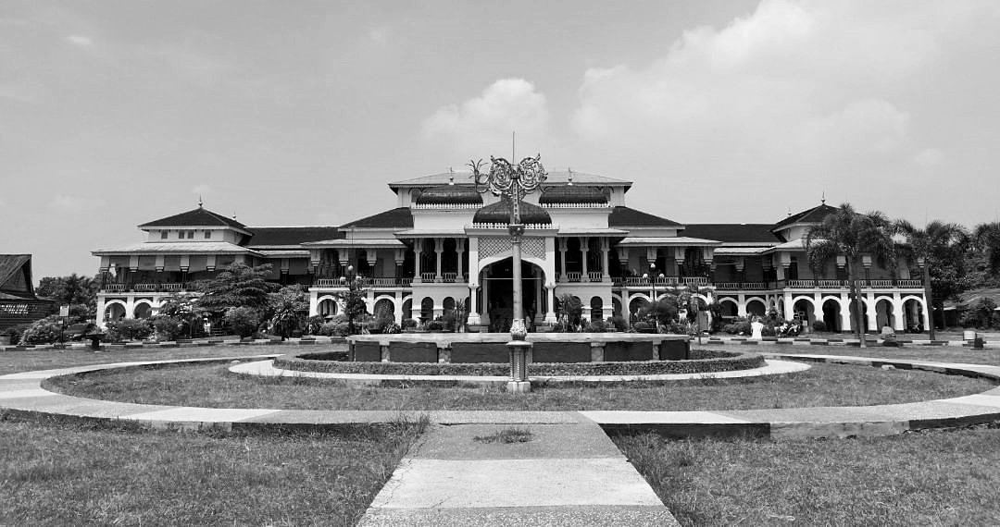
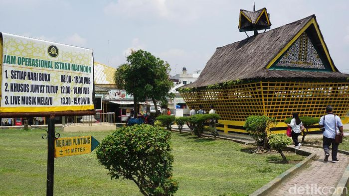
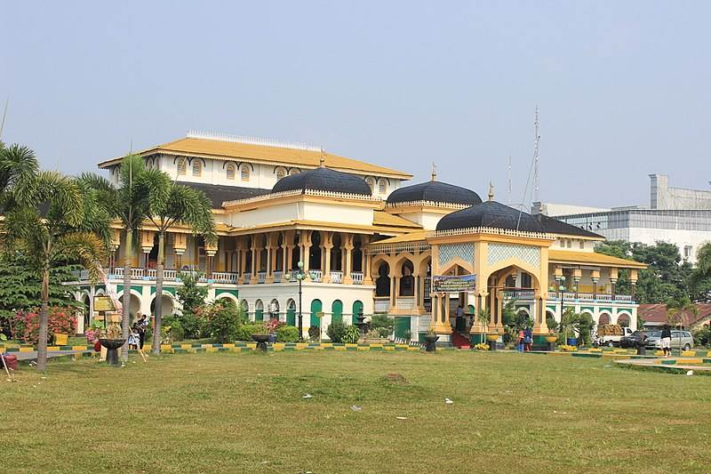
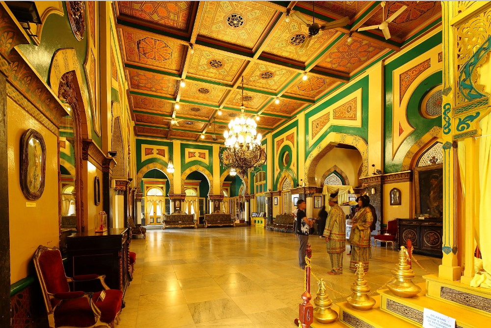
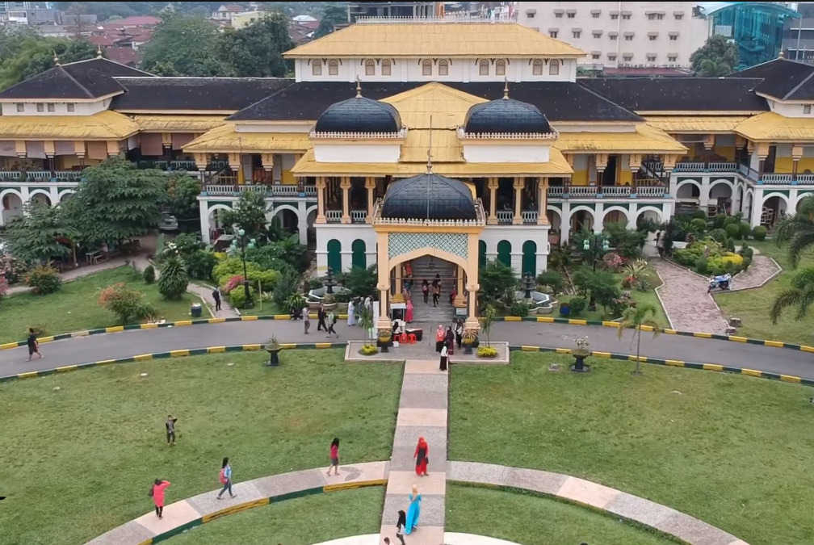
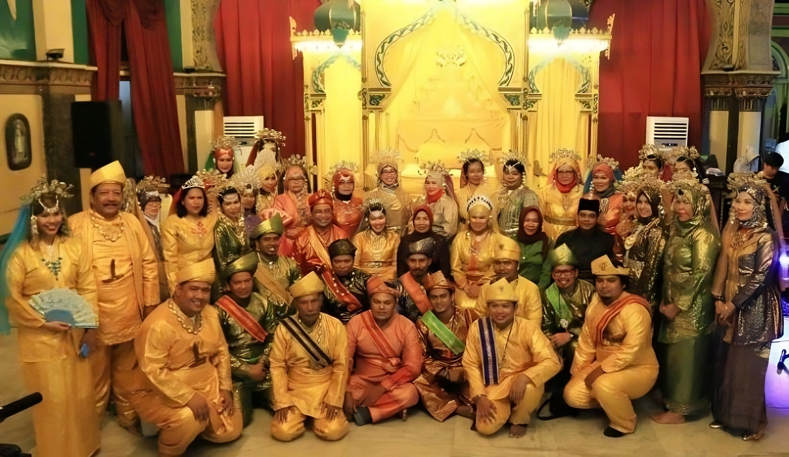

Sejarah Istana Maimun
Istana Maimun dibangun pada 26 Agustus 1888 dan selesai pada 18 Mei 1891, di masa pemerintahan Sultan Makmun Al Rasyid Perkasa Alamsyah yang memerintah pada 1873-1924. Istana ini merupakan bangunan peninggalan Kesultanan Deli yang kini beralih fungsi menjadi museum.
Dalam pembangunannya, Sultan Makmun menggandeng arsitek asal Italia bernama Theodoor van Erp yang juga pernah menjabat sebagai Kapten KNIL (tentara Kerajaan Hindia Belanda). Gaya arsitekur yang digunakan adalah perpaduan Melayu, India, Persia, Italia, dan Spanyol.
Keberadaan istana ini menggantikan peran istana Kesultanan Deli sebelumnya yang berlokasi di Medan Labuhan. Kala itu, Medan Labuhan dianggap sudah terlalu sesak oleh aktivitas perniagaan. Sultan Deli pun memindahkan pusat pemerintahan dari Medan Labuhan ke jantung kota Medan. Dipilihlah titik pertemuan Sungai Deli dan Babura sebagai lokasi istana.
Dalam sejarahnya, Istana Maimun juga terhubung dan berada dalam satu kompleks dengan Masjid Raya Al Mashun dan Taman Sri Deli. Kala itu, Istana Maimun menjadi pusat pemerintahan kesultanan dengan masjid raya sebagai tempat ibadah dan taman untuk bersantai. Istana Maimun mulai diabaikan setelah masa revolusi dan kesultanan Deli usai. Kini, istana itu tidak lagi berfungsi sebagai tempat tinggal sultan. Bangunan utama yang dulu digunakan untuk menerima tamu kini menjadi museum wisata sejarah. Sementara itu, bangunan sayap kiri dan kanannya digunakan untuk acara adat.
Istana Maimun telah ditetapkan sebagai salah satu cagar budaya sesuai Undang-Undang tahun 2010 tentang Cagar Budaya. Status ini juga diperkuat dengan:
- Surat Keputusan Menteri Pariwisata dan Ekonomi Kreatif
- Peraturan Daerah Kota Medan Nomor 6 Tahun 1988 tentang Pelestarian Lingkungan yang Bernilai Sejarah Arsitektur Kepurbakalaan
Daya Tarik Istana Maimun
Istana yang dibangun selama kurang lebih 3 tahun ini memiliki daya tarik, diantaranya:
-
Memiliki Meriam Puntung
Meriam Puntung merupakan salah satu benda bersejarah yang bisa kamu temui di Istana Maimun. Sebagian masyarakat percaya bahwa benda ini adalah senjata perang sakti. Masyarakat setempat juga kerap mengaitkannya dengan legenda Putri Hijau di Medan. Konon, meriam tersebut adalah jelmaan putri hijau yang bernama Mambang Khayali dari Kerajaan Deli. Menurut legenda tersebut, Putri Hijau menjelma menjadi meriam untuk menjaga istana dari serbuan pasukan raja Aceh yang cintanya ditolak sang putri.
-
Bangunan Bercorak Islam
Bangunan peninggalan kerajaan Deli ini memiliki corak Islam yang khas, berpadu dengan arsitektur tradisional Melayu dan Eropa. Hal ini tidak lepas dari peran agama Islam yang memang dianut oleh banyak orang Melayu, termasuk sultan yang mendirikan istana tersebut. Salah satu unsur Islamnya tampak pada tiga atap kubah istana yang menunjukkan pengaruh arsitektur Persia. Kubah-kubah tersebut terbuat dari sirap dan tembaga. Selain itu, ada juga lengkungan-lengkungan pada bagian pintu dan jendela istana yang mencirikan arsitektur Timur Tengah.
-
Perpaduan Arsitektur yang Khas
Selain menunjukkan corak khas Islam, Istana Maimun juga didominasi warna kuning yang melambangkan kebesaran Melayu. Pengaruh arsitektur Melayu juga bisa dilihat dari atap istana yang berbentuk limas, serta corak pucuk rebung dan awan boyan. Desain yang melambangkan Eropa terletak pada tiang-tiang penyangga, dinding vertikal, hingga jendela dan pintu berukuran tinggi dan besar. Selain itu, istana ini juga menghadirkan:
- lampu-lampu gantung dari Prancis
- perabotan dari Belanda dan Inggris
- lantai tangga utama dan pintu masuk balairung yang mencirikan budaya Italia
Di samping itu, kamu juga akan melihat unsur India saat memasuki gerbang istana.
-
Tempat yang Luas
Istana Maimun berdiri di atas lahan seluas 2.772 m² dengan luas bangunan mencapai 772 m². Bangunan tersebut disangga oleh 82 tiang batu dan 43 tiang kayu. Istana ini terdiri dari dua lantai dan terbagi menjadi tiga bagian, yaitu bangunan induk dengan luas 42 m², sayap kiri, dan sayap kanan. Secara keseluruhan, istana ini memiliki 30 ruangan, termasuk penjara, dapur, dan kamar mandi. Di dalam ruangan-ruangan tersebut, terdapat banyak barang bergaya Eropa dan berbagai foto keluarga Kerajaan Deli.
-
Kesempatan Menjadi Raja dan Ratu
Saat berkunjung ke Istana Maimun, kamu berkesempatan untuk menjadi raja atau ratu dengan menyewa pakaian khas Melayu yang tersedia. Setelah selesai berganti kostum, kamu dan pengunjung lainnya harus menunggu giliran untuk berfoto sebagai raja atau ratu di replika singgasana istana. Jika sudah puas berfoto di singgasana, kamu bisa beralih ke sudut lain istana untuk berpose dengan kostum bangsawanmu.
Tarif dan Jam Buka Istana Maimun
Harga Tiket Masuk
Tiket masuk Istana Maimun adalah Rp10.000 per orang (dewasa) dan Rp 5.000 (anak-anak). Selain itu, ada juga tarif masuk sebesar Rp3.000 untuk melihat Meriam Puntung. Tiket bisa dibeli online maupun offline. Jika kamu membawa kendaraan pribadi, siapkan biaya parkir sebesar Rp3.000 untuk kendaraan roda dua dan Rp5.000 untuk roda empat. Kalau ingin berfoto mengenakan pakaian adat khas kerajaan, siapkan juga biaya sewa kostum sebesar Rp20.000–30.000 per setelan.
Jam Operasional
Kamu bisa mengunjungi Istana Maimun pada:
- Hari buka: Setiap hari, termasuk hari libur nasional
- Jam buka khusus Jumat: 08.00-12.00 WIB (sesi pertama) & 14.00-17.00 (sesi kedua)
Lokasi dan Rute Menuju Istana Maimun
Lokasi Istana Maimun
Istana Maimun adalah istana Kesultanan Deli yang terletak di Kota Medan, Sumatera Utara. Alamat Istana Maimun berada di Jalan Brigjen Katamso No.66, Aur, Kecamatan Medan Maimun, Kota Medan. Istana ini terletak dekat dengan pusat kota dan Masjid Raya Medan.
Rute Menuju Istana Maimun
Jalan menuju Istana Maimun bisa kamu akses dengan kendaraan roda dua, roda empat, ataupun kendaraan umum. Lokasinya sendiri sangat strategis, yaitu di dekat pusat Kota Medan dengan jarak 3 km saja. Dengan begitu, kamu bisa sampai dalam waktu sekitar 10-15 menit dari pusat kota. Pilihan rutenya juga beragam. Kalau kamu datang dari Bandara Kualanamu:
- naik kereta rute Bandara Kualanamu-Medan
- sesampainya di Medan, naik angkot jurusan Amplas
- turun di depan Istana Maimun
- naik bus jurusan Amplas dan turun di terminal Amplas
- lanjutkan dengan angkot 64 jurusan Pinang Baris, lalu turun di depan istana
- Agar tidak menunggu lama di terminal, sebaiknya kamu datang di pagi hari.
Fasilitas Istana Maimun
Fasilitas wisata di Istana Maimun adalah sebagai berikut:
- Area parkir
- Toilet
- Penyewaan baju adat
- Taman
- Penjualan makanan dan minuman
- Penyewaan kuda
- Barang-barang bersejarah
- Meriam Puntung